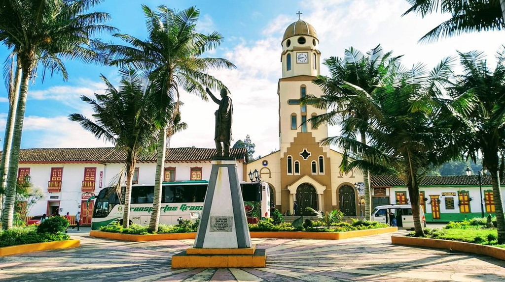
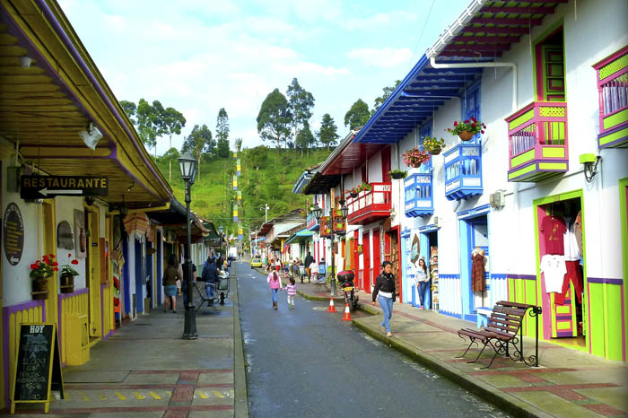

Es tal vez el municipio mas importante para el turismo en el Quindío, esto debido a tres razones fundamentales. La primera, la bella y conservada arquitectura legada de la colonización antioqueña; la segunda, el imponente valle de Cocora, que a nivel paisajístico es uno de los mas bonitos de Colombia; y la tercera, por un ambiente contagioso de paz y bienestar que se impregna inmediatamente se arriba.
Para llegar se toma la vía que conecta a Armenia con Pereira, haciendo el desvío a la derecha en el km 17. Salento aparece al término de una carretera curva que destila por el valle del río Quindío y pasa frente a las fondas típicas del corregimiento de Boquía. El llamado padre de los municipios del Quindío, fue el primero en ser fundado por los colonizadores antioqueños a mediados del siglo XIX.
Lugares de interés
Plaza de Bolivar.
Esta enmarcado por casas típicas de vivas tonalidades en las que funcionan la Alcaldía, los despachos municipales, cafés, restaurantes y comercio en general. A un costado se impone el templo Nuestra Señora del Carmen, y en el centro, entre bancas y jardines, la estatua de Simón Bolivar. El lugar es todo un con- junto pictórico que concentra la apacible vida del pueblo.
Otra llamativa característica en los alrededores del parque la aportan los clásicos yipaos que inician muy temprano el desfile desde y hacia las veredas aledañas; como es costumbre, cargados hasta los espejos de pasajeros, café, plátano e inimaginables acarreos.

Calle Real.
Inicia en uno de los vértices de la plaza rumbo norte hacia el mirador Alto de la Cruz. Se trata de la calle mejor conservada con el protagonismo de casas típicas y alegres que le han merecido a Salento estar entre los pueblos más lindos de Colombia. En ella se da la confluencia de un amplio mercado artesanal, de restaurantes, cafés y hostales que con sus productos y servicios constituyen el alma comercial de la municipalidad. Dichos sitios resultan propicios para adquirir muy buenos recuerdos, artesanías en guadua, y en general, gran cantidad de artículos como ruanas, sombreros, pulseras o collares. Se le llama calle Real porque era allí donde vivían las personas más ricas e influyentes del pueblo.
El recorrido turístico en Salento se complementa con el placer de disfrutar la gastronomía tradicional. Gracias a la existencia de muchos criaderos, la trucha en sus distintas presentaciones es el plato más famoso del pueblo.

Valle del Cocora
Cocora era el nombre de una princesa quimbaya, hija del cacique Acaime, y cuyo significado es estrella de agua.
El Valle del Cocora está a unos 25 kilómetros de Salento, y el trayecto en Willys se hace en unos 30 minutos. Los jeeps te dejan justo a la entrada del valle. Hay que destacar que el Valle forma parte del Parque Nacional Natural de los Nevados. No se paga entrada para visitarlo.
Hace parte del área protegida del parque natural de los Nevados, con una altura máxima de 2400 msnm y altura mínima de 1800 msnm.
Dentro de su gran valor como reserva natural, podemos mencionar que es la cuna de la Palma de Cera del Quindío (ceroxylon quindiniense), árbol nacional de Colombia. En sus terrenos es recorrido por el Rio Quindio, principal afluente del Departamento del Quindío.
Esta reserva natural ofrece una escenario inmejorable para los aficionados a las caminatas en medio de la naturaleza, y respirando el mejor aire puro.
Podrá encontrar diferentes recorridos, con diferentes niveles de dificultad, aptos para todas las edades y diferentes condiciones física.

¿deseas conocer los precios y la información del transporte a salento?